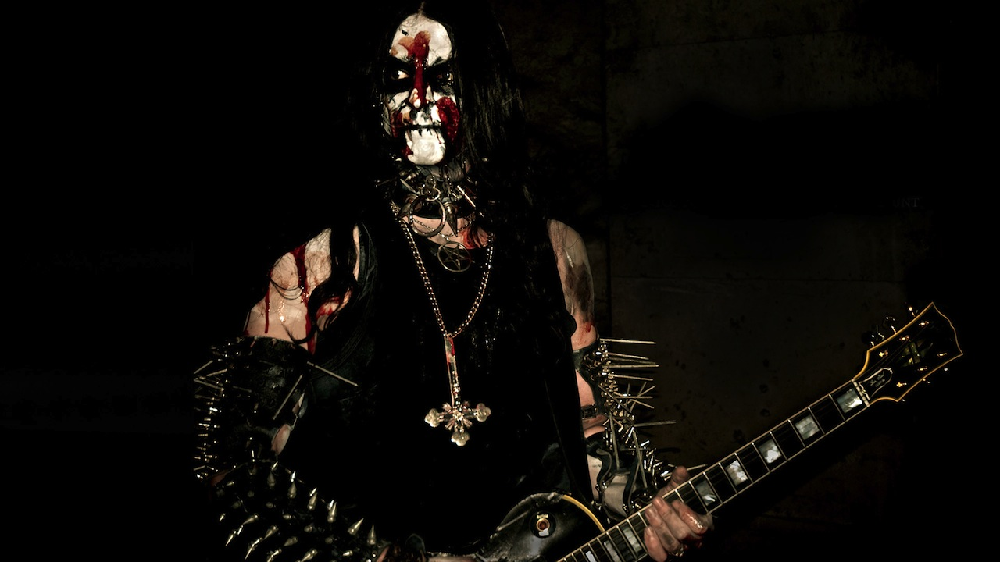
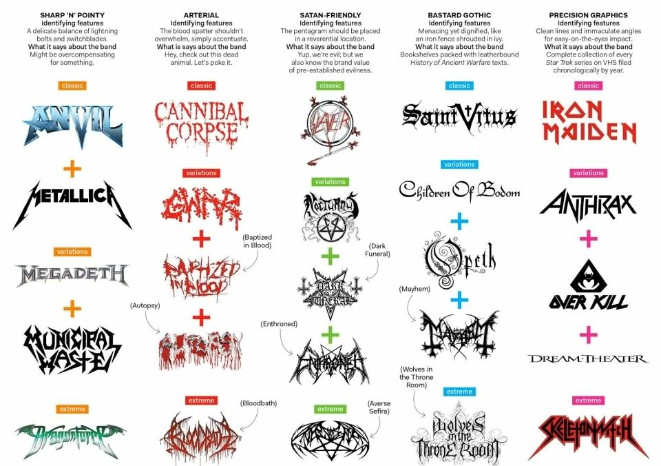
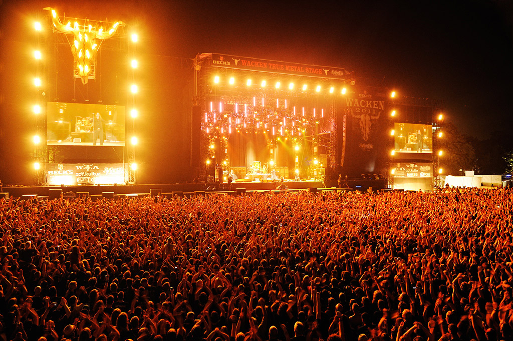

Tony Iommi
1970s: Many Offshoots
-
Glam Metal
Twisted Sister, Motley Crue, Poison -
Progressive Rock
Rush, Yes -
New Wave of British Heavy Metal
Iron Maiden, Motorhead -
Punk
The Ramones, The Misfits, The Clash -
Power Metal
Manowar, Judas Priest, Rainbow
1980s: Modern Metal
-
Thrash Metal
Metallica, Slayer, Anthrax, Megadeth -
Death Metal
Cannibal Corpse, Death -
Progressive Metal
Dream Theater, Fates Warning, Symphony X, Opeth - Black Metal
- Doom Metal
1990s and 2000s: Fusion
-
Nu Metal
KoЯn, Limp Bizkit, System of a Down -
Metalcore
Killswitch Engage, Shadows Fall
Family Tree

Wat.
Sludge Metal, Stoner Metal, Funk Metal, Black Metal, Symphonic Black Metal, White Metal, Unblack Metal, Death n' Roll, Groove Metal, Drone Metal, Rap Metal, Viking Death Metal, Medieval Metal, Celtic Metal, Pagan Metal, Goregrind, Nintendocore, Neoclassical Metal, Industrial Metal, Math Metal, Teutonic thrash metal.
http://en.wikipedia.org/wiki/Heavy_metal_subgenres10 Genres of Metal in 3 Minutes
Glam Metal
Black Metal
The Tritone
a.k.a. the flatted fizziff.

Where are metal bands from?
Bay Area Metal
Metallica, Autopsy, Exodus, Testament, High on Fire, Black Cobra, Machine Head, Death Angel, etc.
Hetfield Grunts
Fans
Concerts & Festivals
Singing?
- Singing [Iron Maiden]
- Screaming [Metallica, Slayer, Pantera]
- Nothing [Joe Satriani, Steve Vai, Paul Gilbert]
Drums
Floor Toms, Fills and Feet
Cymbals

Blast Beats
Guitar

Picking
Bass
Heavy Riffs
Breakdowns, Tempo Changes
R.I.P. Jeff Hanneman of Slayer